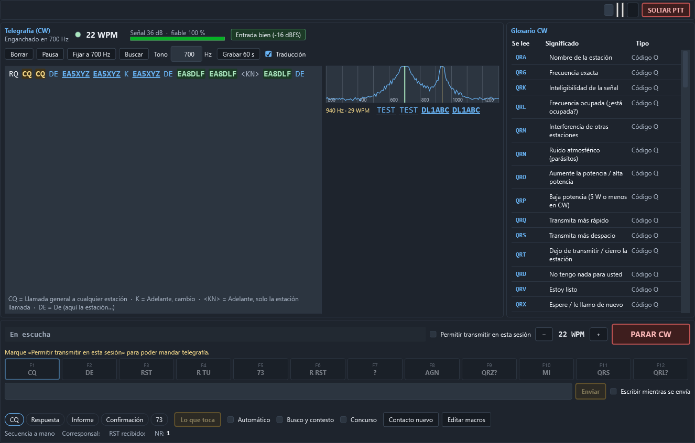

Telegrafía (CW)
La página Operar › CW (Ctrl Mayús 1) lee la telegrafía que se oye por el equipo y la escribe en pantalla, con su velocidad, su tono y lo que significa cada abreviatura. El decodificador es del propio programa: no hace falta fldigi, CW Skimmer ni ningún otro programa.


Solo escucha. El decodificador no transmite ni manda nada al equipo: del CAT lee el modo y el tono de telegrafía (pitch), y nada más.
Dónde está
- Operar › CW: la página entera. Arriba, la barra y el frontal del equipo (el mismo que en la cabina y en Digital); debajo, el decodificador a lo grande; a la derecha, el glosario CW; y abajo, el sitio de la transmisión en CW (macros y escritura libre).
- En la cabina, una sola línea con lo último que se ha leído, la velocidad, el estado y Abrir CW. Sale sola cuando el equipo pasa a CW; con el botón CW de la derecha de la barra del equipo sale también en otros modos, y Ocultar la quita. La cabina es para el contacto y el cluster: por eso ahí va solo esa línea.

Escucha mientras se ve (la página, o la línea de la cabina) y no está en pausa, por la entrada elegida en Configuración › Audio y digitales (el codec USB del FT-710). Si esa entrada está cerrada, ofrece Escuchar, que la abre sin tocar la radio. El audio se comparte con el módem digital y la fonía.
Qué enseña
- El estado: Buscando señal…, Enganchado en 700 Hz o Fijo en 700 Hz, y cuánto lleva sin señal.
- La luz que se enciende con cada punto y raya: si parpadea al ritmo de lo que se oye, el decodificador está bien enganchado.
- WPM: la velocidad, de 5 a 60 palabras por minuto. Sigue los cambios y la mano de quien manipula.
- Señal en dB sobre el ruido y fiable: cuánto se parecen los tiempos a los de la telegrafía.
- La entrada: Entrada bien, Entrada baja (suba el volumen del codec) o Entrada SATURADA (baje el volumen del codec o la ganancia de AF). El decodificador no depende del nivel: lee igual de −40 a +10 dB de diferencia; el indicador es para que la tarjeta no recorte ni se quede sin bits.
- El texto en vivo, palabra a palabra. Se desplaza solo mientras se está abajo.
Indicativos, abreviaturas y prosignos
- Los indicativos salen subrayados: un clic lo pasa al «Contacto nuevo». Al pasar el ratón, el país.
- CQ y QRZ? salen en ámbar: alguien está llamando.
- Su indicativo sale en verde: le están llamando a usted.
- Las abreviaturas y los códigos Q conocidos (TU, FB, 73, QTH, QRZ, 5NN…) salen en otro color, con un subrayado fino: al pasar el ratón dicen qué significan.
- Traducción (casilla de los mandos): una línea debajo del texto con el significado de las últimas abreviaturas: «TU = Gracias · 73 = Saludos cordiales».
- Los prosignos salen entre ángulos (
<AR>,<SK>,<BT>,<KN>,<AS>…), también con su significado.
El glosario CW
A la derecha de la página, la lista entera: los códigos Q (QRA a QTR), las abreviaturas (CQ, DE, K, R, TU, TNX, FB, OM, YL, ES, HR, UR, RST, 5NN, AGN, PSE, GM/GA/GE/GN, 73, 88…), los prosignos y los números cortos de concurso (T = 0, A = 1, U = 2, V = 3, E = 5, B = 7, D = 8, N = 9). Todo en el idioma del programa.
El tono: AUTO, buscar y fijar
- AUTO (de fábrica): busca la señal más fuerte entre 300 y 1200 Hz. En cuanto empieza a leerla, se engancha a ella: ya no salta a otra aunque suba más, ni en las pausas entre palabras, ni en los bajones de QSB. Solo vuelve a buscar cuando la señal lleva 5 segundos sin aparecer (se cambia en los ajustes) o al pulsar Buscar.
- Fijar a … Hz fija el tono al pitch del equipo (en el FT-710, CW PITCH). Sin CAT, al tono que tenga ahora. Con el tono fijo, el botón pasa a Auto.
- Tono (la casilla): escriba los hercios (300 a 1200) y pulse
Intro; las flechas↑↓y la rueda del ratón lo mueven de 10 en 10 Hz. - Un clic en el mini espectro fija el tono en ese punto: es la forma de elegir una señal débil que tiene otra más fuerte al lado.
El mini espectro y las demás señales
El audio de 200 a 1300 Hz: la raya verde es la señal que se lee; las rayas ámbar, las demás que se leen a la vez (el «skimmer»), cada una con su línea debajo.
Los demás botones
- Borrar limpia el texto. Pausa deja de escuchar; Seguir vuelve.
- Grabar 60 s guarda un minuto del audio tal como llega del equipo en
%AppData%\CuadernoNodisla\grabaciones-cw\. Sirve para mandarnos un caso que no se lee bien (a nodisla@nodisla.org). No transmite nada.
El ruido no escribe
El ruido de la banda, el QRN y las señales troceadas no escriben basura:
- el texto no sale hasta que se reconocen varios caracteres seguidos con tiempos de telegrafía y con letras de verdad (no solo E, I, T y S);
- lo enganchado se vigila palabra a palabra: si el texto empieza a tener la pinta del ruido («E E ET IEI TTEA…»), deja de escribir y se desengancha;
- el silenciador mide el ruido en el momento: tocar la ganancia de RF o el AGC del equipo no lo engaña.
Lo que se leyó antes de engancharse no se pierde: sale de golpe en cuanto se engancha.
Ajustes
En Configuración › Audio y digitales, apartado Telegrafía (CW):

- Tono por omisión: con el que arranca (700 Hz de fábrica).
- Ancho del filtro: 100 Hz va bien casi siempre.
- Sensibilidad (1 a 10): más alta lee señales más débiles. El ruido no escribe con ninguna.
- Velocidad: las que se siguen, de 5 a 60 WPM.
- Señales a la vez: además de la principal, cuántas más se leen. Con 1, solo la principal.
- Volver a buscar tras: segundos sin la señal enganchada antes de buscar otra (5 de fábrica).
Pulse Guardar: el decodificador toma los ajustes nuevos en el acto.
Cuánto lee
Medido con telegrafía sintética sobre ruido blanco (las cifras completas están en tests/Nodisla.Cuaderno.Modos.Pruebas/Banco/resultados-cw.md), con la relación señal-ruido en 500 Hz, la habitual en telegrafía (errores de carácter):
| Señal (S/R en 500 Hz) | 12 WPM | 20 WPM | 30 WPM | 40 WPM |
|---|---|---|---|---|
| +17 dB | 6 % | 6 % | 2 % | 3 % |
| +7 dB | 6 % | 2 % | 2 % | 8 % |
| +3 dB | 3 % | 4 % | 8 % | 29 % |
| +1 dB | 86 % | 89 % | 90 % | 85 % |
A +1 dB y por debajo casi no escribe: prefiere callarse a escribir basura. Con el ruido real del FT-710, de −40 a +10 dB de nivel de entrada, se copia igual (2 % de errores con la señal 6 dB sobre el ruido del filtro).